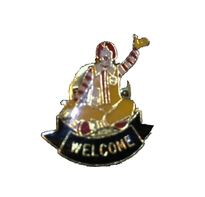
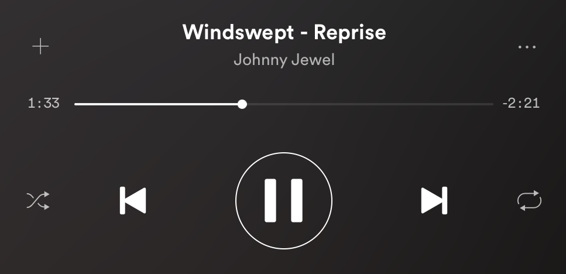
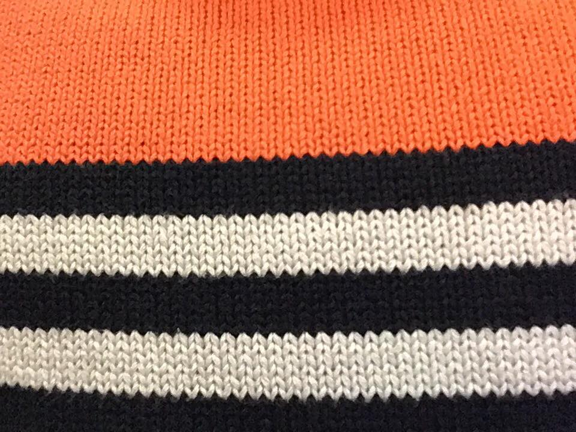
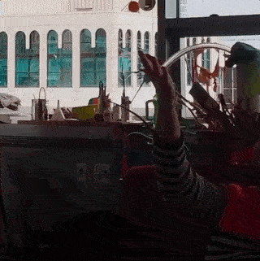
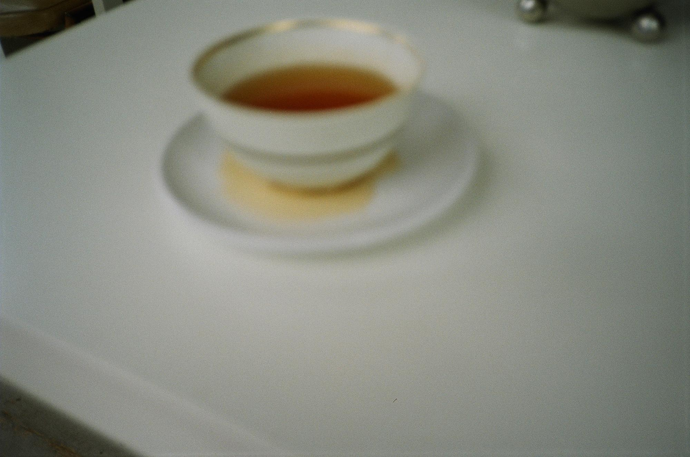
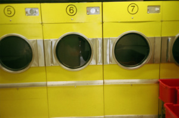

Oh, today I met the landlady and she said during the work they would do to prevent my house to fall apart I would not stay in the apartment upstairs...
I think I would prefer the octopodal mode of thinking through different tentacles that have their own desires, the lures that activate them... But I don't really think that cats cannot do that, or humans - or more-than humans (specially).

Intimate, but not personal.

INFO 1
God morgen.
:tarquin:

So sad so sexy, spectre confetti

I started sleeping in the living room, to prevent me from sleep walking in the living room and give my feet some rest. Delicious.

INFO 1
Could you live in a place with zero pieces of furniture?


Beautiful name. I pronounce it like ‘hiver’.
INFO 2

A cat versus a squirrel in three pictures: (I am so stupid).

*** Now playing: Ata Kak - Obaa Sima ***
INFO 3>
Strange! We're now on the same timeline (or time zone).
Watching a presentation on waste and empty environments. Very boring. At least it reminded me of a Thai restaurant in Milano I loved to go, always completely empty before 1PM.
.

There is no inside or outside, but rather modes of insiding or outsiding
INFO 4>
thank you, mr jackpots.
INFO 5>
Hello-o-ooooooooo.
I wish I could talk about nice things. I'll try.
INFO 6>
I found the heaviest material in this world.
INFO 7>
my new pin of Ronald McDonald says 'welcome'.

INFO 8>
I'm writing this while I'm sitting in a sofa in the Spaze, with my boots on. That can’t be a good sign...
And there’s a nice cat from the neighborhood that he started feeding and now lives with him.
He was so upset about linguistic consent that his body started fabricating other words
Oh my god, we almost reached 80 pages of message exchanging!!
INFO 9>
*** now playing: Robert Palmer - Addicted to love ***
34
34
Yes ! And just say to yourself something like: on Monday I’ll look for a future again. Now trying to sleep and eat well is just as much part of composing a future.
INFO 10>
The leakage of Späz into the university (found it!)
I put some tuna/salmon cat food outside for the stray cat. She visited me today and is less afraid of me. It's really funny to think that my preferred meal (Tuna/Salmon bowl at Kazu) is similar to the food I use to feed my cat friends.
I hope tomorrow I'll finally develop the film from my new camera.
INFO 11>
Don’t you find it funny that I can also write like a person?
** Now playing: Dolly Parton - Here You Come Again **
ooooo vacuuming
INFO 12>
This confusion is affecting my senses. My senses were always confused in the sense that, you may have noted, I’m very affected by some kinds of smells and colour, like the hate I have for any kind of wasabi."
INFO 13>
INFO 14>
INFO 15>